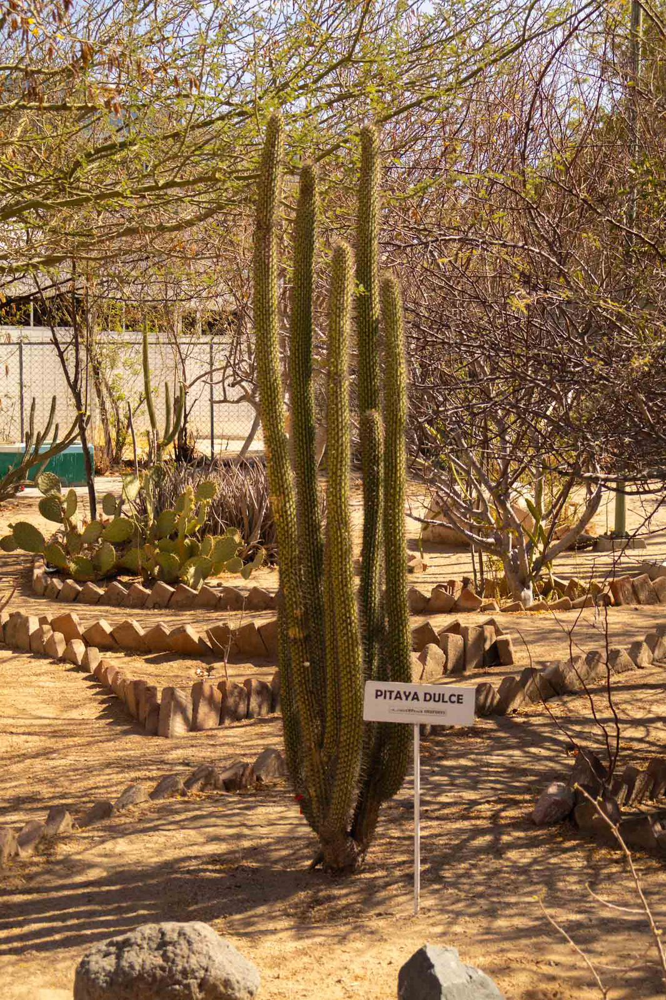
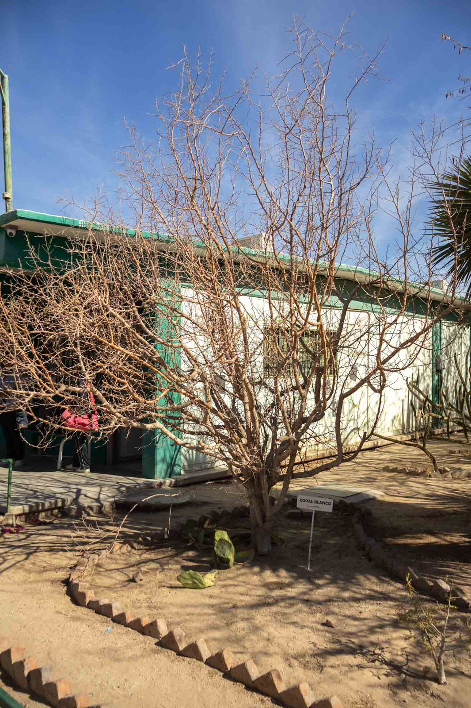
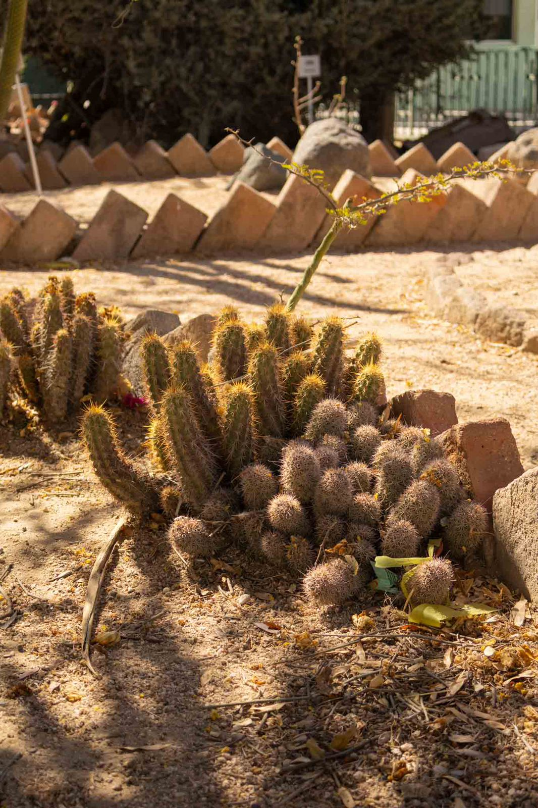
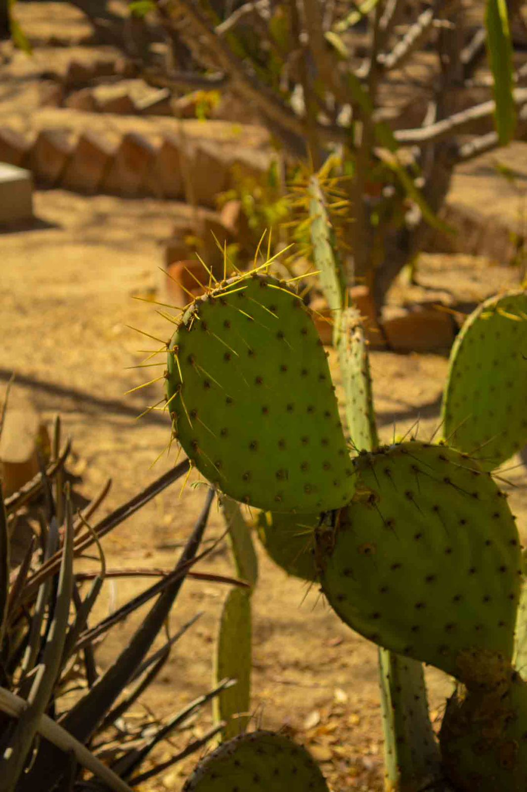
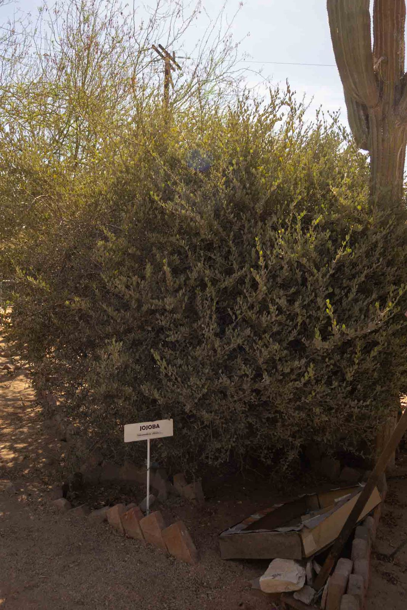
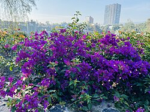

Cardón.
El cardón (principalmente Pachycereus pringlei) es uno de los cactus columnares más grandes del mundo, nativo del desierto de Sonora y Baja California en México, capaz de alcanzar 20 metros de altura.

Pitahaya Dulce.
Pitayo dulce es una especie de planta fanerógama de la familia Cactaceae. Es endémica de Norteamérica. Crece de 1 a 8 m en varias ramas columnares en forma de árbol y con flores de color rosado.

Copal blanco.
Se describe esta especie, se consigna su uso como base para la elaboración de tintas para escritura y se ubica su origen en las localidades de Cuixco, Tepecuacuilco e Youalla, hoy Iguala, en el estado de Guerrero. Su resina se usa como incienso y medicamento.
🔊 Experiencia interactiva
Haz clic sobre las imágenes de las plantas y árboles para escuchar una descripción en audio de cada especie.
Cardón.
El cardón gigante (Pachycereus pringlei) es la cactácea más grande del mundo, endémica del desierto de Sonora y Baja California, México. Puede medir hasta 20 metros de altura, pesar hasta 25 toneladas y vivir más de 150 años.
Pitahaya Dulce
El pitayo dulce (Stenocereus thurberi), o pitaya sonorense, es un cactus endémico del Desierto de Sonora (México/Arizona) que produce frutos silvestres rojos, dulces y aromáticos, con pulpa llena de pequeñas semillas negras. Es rico en antioxidantes, vitamina C y fibra, y se consume fresco principalmente durante el verano.

Gobernadora
La gobernadora (Larrea tridentata) es un arbusto resinoso del semidesierto de Norteamérica (México y EE.UU.) conocido por su alta resistencia y propiedades medicinales. Se utiliza principalmente en medicina tradicional para combatir infecciones (bactericida/fungicida), cálculos renales, dolores reumáticos, y problemas de la piel debido a sus compuestos fenólicos, como el ácido nordihidroguaiarético (NDGA).
Biznaga.
la biznaga es un tipo de cactus, específicamente del género Ferocactus, que se caracteriza por su forma columnar o barril. Es una planta muy emblemática del desierto mexicano, que ha sido utilizada tradicionalmente por sus frutos y como fuente de agua.

Echinocereus.
Echinocereus es un género de cactos acordonados, de pequeños a medianos, cilíndrico, con 50 especies del sudeste de EE. UU. y de México. Generalmente las flores son grandes y los frutos comestibles. Muchas especies de Echinocereus prefieren pleno sol.

Opuntia
El cactus de higo chumbo, también conocido como nopal, opuntia y otros nombres, es promocionado por tratar la diabetes, el colesterol alto, la obesidad y la resaca. También es promocionado por sus propiedades antivirales y antiinflamatorias.
Jojoba. (Simmondsia chinensis).
es un arbusto nativo de desiertos en México y EE. UU. cuyo fruto produce una cera líquida, conocida como aceite de jojoba, altamente valorada en cosmética. Sirve principalmente para hidratar piel y cabello, regular la grasa, combatir el acné, nutrir el cabello seco y actuar como antioxidante gracias a su composición similar al sebo humano.

Copal blanco. (Bursera bipinnata o B. glabrifolia).
es un árbol nativo de México y Mesoamérica, reconocido por su resina aromática utilizada ancestralmente como incienso ritual (sahumerio) y medicina tradicional. Alcanza de 2 a 8 metros, prospera en climas secos/cálidos, y su humo se usa para purificar, relajar y tratar afecciones respiratorias, Se describe esta especie, se consigna su uso como base para la elaboración de tintas para escritura y se ubica su origen en las localidades de Cuixco, Tepecuacuilco e Youalla, hoy Iguala, en el estado de Guerrero. Su resina se usa como incienso y medicamento.
Buganvilias. (Bougainvillea)
Las buganvilias (Bougainvillea) son un género de arbustos y plantas trepadoras nativas de Sudamérica. Son mundialmente famosas por sus vibrantes y coloridas brácteas (hojas modificadas que rodean a su pequeña flor blanca) que florecen casi todo el año en climas cálidos y tropicales

Ciruelo del Monte. (Cyrtocarpa edulis)
El Ciruelo del Monte (Cyrtocarpa edulis), conocido localmente como ciruelo cimarrón, es un árbol endémico muy querido en Baja California Sur. Sus frutos, muy populares en la región de La Paz y Los Cabos, son un manjar tradicional de la temporada de verano
palo verde. (Parkinsonia Aculeata)
El árbol palo verde (Parkinsonia aculeata) es una especie emblemática de zonas áridas y desérticas. Su nombre se debe a su característica corteza verde, la cual le permite realizar la fotosíntesis a través de su tronco y ramas, garantizando su supervivencia en épocas de sequía o frío